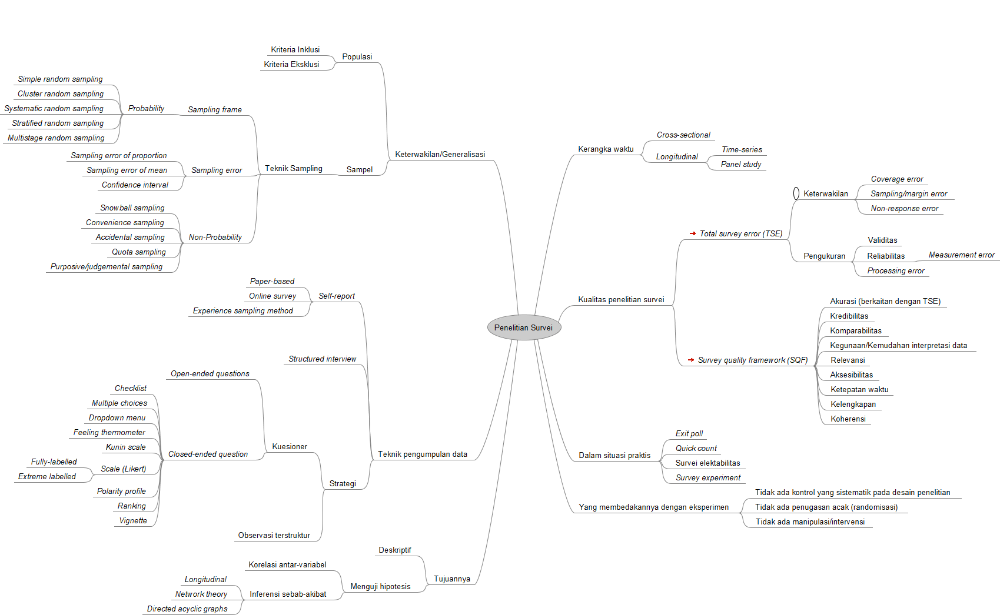

Penelitian Survei

Penelitian Survei
Keterwakilan/Generalisasi
Populasi
Kriteria Inklusi
Kriteria Eksklusi
Sampel
Teknik Sampling
Sampling frame
Probability
Simple random sampling
Cluster random sampling
Systematic random sampling
Stratified random sampling
Multistage random sampling
Sampling error
Sampling error of proportion
Sampling error of mean
Confidence interval
Non-Probability
Snowball sampling
Convenience sampling
Accidental sampling
Quota sampling
Purposive/judgemental sampling
Teknik pengumpulan data
Self-report
Paper-based
Online survey
Experience sampling method
Structured interview
Strategi
Kuesioner
Open-ended questions
Closed-ended question
Checklist
Multiple choices
Dropdown menu
Feeling thermometer
Kunin scale
Scale (Likert)
Fully-labelled
Extreme labelled
Polarity profile
Ranking
Vignette
Observasi terstruktur
Tujuannya
Deskriptif
Menguji hipotesis
Korelasi antar-variabel
Inferensi sebab-akibat
Longitudinal
Network theory
Directed acyclic graphs
Kerangka waktu
Cross-sectional
Longitudinal
Time-series
Panel study
Kualitas penelitian survei
Total survey error (TSE)
Keterwakilan
Coverage error
Sampling/margin error
Non-response error
Pengukuran
Validitas
Reliabilitas
Measurement error
Processing error
Survey quality framework (SQF)
Akurasi (berkaitan dengan TSE)
Kredibilitas
Komparabilitas
Kegunaan/Kemudahan interpretasi data
Relevansi
Aksesibilitas
Ketepatan waktu
Kelengkapan
Koherensi
Dalam situasi praktis
Exit poll
Quick count
Survei elektabilitas
Survey experiment
Yang membedakannya dengan eksperimen
Tidak ada kontrol yang sistematik pada desain penelitian
Tidak ada penugasan acak (randomisasi)
Tidak ada manipulasi/intervensi